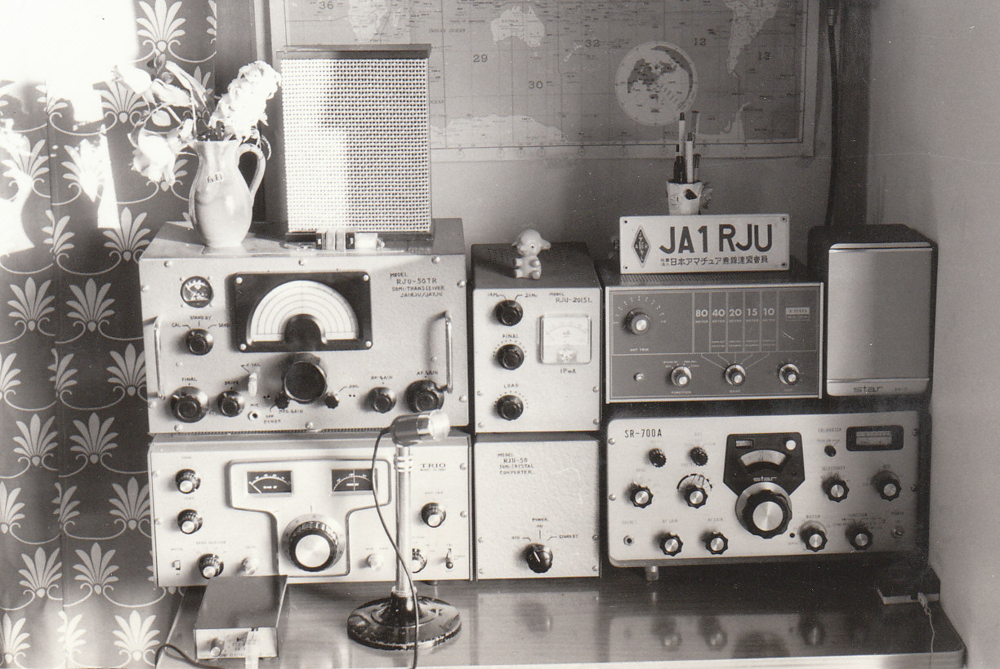
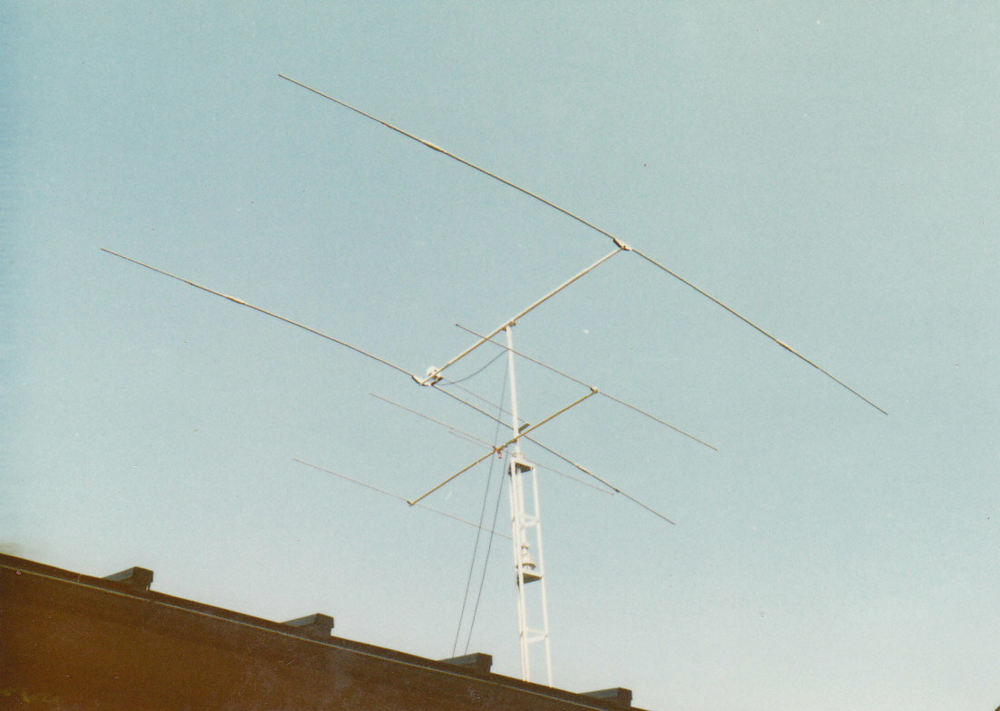

1968年の6m入感状況
[DX Report Jan-Dec.1968]
TIME:JST(UTC+0900)
Report from JA1RJU (PM95sq)
◎いよいよサイクル20もピークを迎えた。予想に反して上昇カーブは緩やかでコンデションの上昇は"頭打ち"
期待薄が囁かれ出した。HF帯の電話はSSBが全盛時代。6mでSSBを運用する局も徐々に増えてきた。
この年に第1回のVHF SSB ミーティング(後のVSG)が東京で開催された。
◎JA1RJUはこの年に設置(常置)場所を東京杉並区から東京小金井市に変更。
11月9日から50MHzのSSB運用を開始。

01-31.Jan.1968
◎50MCでは海外とのDX QSOは無し。
01-22.Feb.1968
◎50MCでは海外とのDX QSOは無し。
23.Feb.1968
◎KH6CH/KW6(Takaさん)が50.400MC(AM)でアクティブにQRVしていた。
24-28.Feb.1968
◎50MCでは海外とのDX QSOは無し。
01-31.Mar.1968
◎50MCでは海外とのDX QSOは無し。
01-30.Apr.1968
◎50MCでは海外とのDX QSOは無し。
01-31.May.1968
◎50MCでは海外とのDX QSOは無し。
01-30.Jun.1968
◎50MCでは海外とのDX QSOは無し。
01-31.Jul.1968
◎50MCでは海外とのDX QSOは無し。
01-31.Aug.1968
◎50MCでは海外とのDX QSOは無し。
01-30.Sep.1968
◎50MCでは海外とのDX QSOは無し。
01-31.Oct.1968
◎50MCでは海外とのDX QSOは無し。
01-08.Nov.1968
◎50MCでは海外とのDX QSOは無し。
09.Nov.1968
◎JA1RJUの6mのSSBの運用を開始。(装置はTX-388+6146s=自作トランスバータ)。
◎GUAMのK7HIX/KG6がSSBで強力に入感。6mのSSBでの初QSOに成功。
K7HIX/KG6 12:32 50.- SSB QSO (6m #009)


11月から50MHzのSSBを運用。受信機はSTAR製のSR-700A / ANTは自作3EL-Yagi。
10-30.Nov.1968
◎50MCでは海外とのDX QSOは無し。
01-31.Dec.1968
◎50MCでは海外とのDX QSOは無し。
|